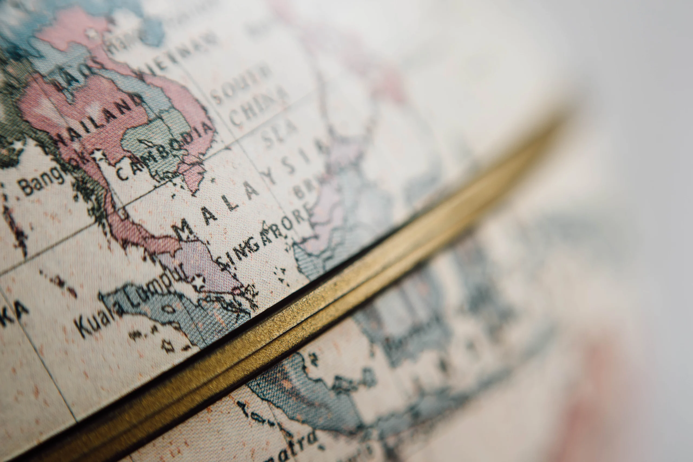

A little about us

The church is dedicated to: the Holy Righteous Prince Alexander Nevsky.
Parish jurisdiction: Russian Orthodox Church of the Moscow Patriarchate, Western European Exarchate.
Diocese: The Hague and the Netherlands.
Diocesan bishop: Archbishop of The Hague and the Netherlands Elisej (Ganaba).
Language of worship: Church Slavonic; the main readings and prayers are repeated in Dutch.
Service schedule:
Saturday: 17:30 — Vespers with All-Night Vigil
Sunday: 09:50 — confession, 10:30 — Divine Liturgy
Full schedule here
(under development)
Calendar: Julian (old style)
Sacred objects
- icon of the Holy Righteous Prince Alexander Nevsky with a particle of his relics,
- icon of the Venerable Alexander of Svir with a particle of his relics,
- icon of the Venerable Zosimas, Savvatius and Herman of the Solovetsky Monastery with particles of their relics,
- the venerated icon of the Mother of God "Sporitelnitsa" (She Who Hastens to Hear),
- icon of Blessed Xenia of Petersburg with a piece of her tombstone,
- icon of Saint Luke (Vojno-Yasenetzky), Archbishop of Simferopol, with a particle of his coffin.
Contact information
Postal address:
Schiedamsesingel 220
Rotterdam, 3012 BA, Netherlands
Rector of the church: Priest Anatoli Babjuk
mob. +(31)(0)6 58955635 (WhatsApp)
Parish secretary: Ija Alexandrovna Muzykina
mob. +(31)(0)6 15047973 (WhatsApp)
Parish website(s): www.ruskerk.nl (main) www.orthodoxkerk.nl (under development)
Parish mailbox:
ruskerk.rdam@gmail.com (main)
contact@ruskerk.nl (archive)
Parish bank account
1. Name: BOUW RUSSISCH ORTHODOXE
IBAN: NL72 ABNA 0452 3459 60 BIC: ABNANL2A
2. Name: STG Russische Orthodoxe Kerk
IBAN: NL65 INGB 0000 6179 04 BIC: INGBNL2A

Support the church
"Support the church" is an opportunity to contribute to the spiritual development and continuation of the church's mission. Your donation may be used for charitable programmes, religious events, or support of the local church.
The "Support the church" button allows you to donate quickly and securely online. Choose a donation amount and payment method, and your gift will help the church continue its important mission. Thank you for your support!